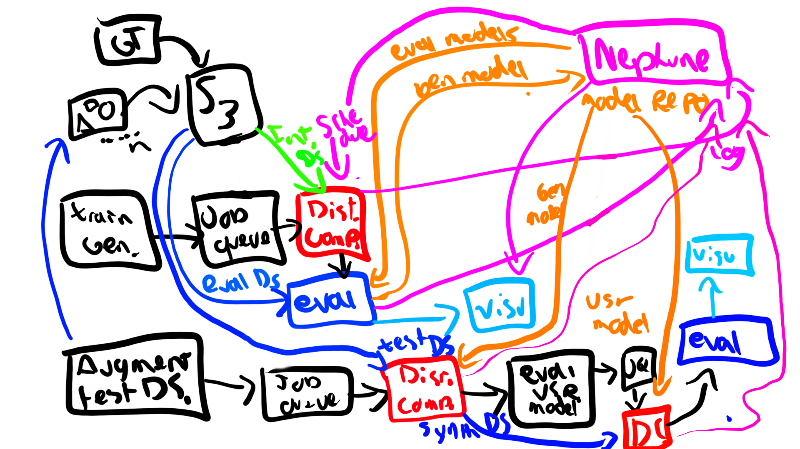

Infrastructure Devops, & MLOps
Contents
Infrastructure Devops, & MLOps#
Challenges and risks#
The main challenges and risks that the Argus system has:
Safety: The safety of ADAS systems is paramount, and as such every decision taken with the system must begin by being thoroughly analyzed and its implications must be assumed to be robust and accurate enough as there is potential of risking human lives in the case of a failure.
Proper Dataset Selection: The generative models are only as good as the source dataset that is being used to train them. For this reason the dataset needs to be constantly improved, analyzed and validated. Diverse adverse weather conditions need to be obtained, and this can be complex due to the legal, technical and climate conditions. The dataset acquisition can be tackled as described in the datasets and data-flywheel sections.
Model Creep / Combinatorics / Complexity: by mix-and-matching multiple adverse condition generative models the system runs the risk of increasing the complexity of the system and the number of models that need to be trained and maintained. This is even more relevant when it is considered that the outputs of the models then need to be evaluated with multiple downstream task models. A balance must be struck to ensure optimal performance at a functional scale.
Scalable architecture: The architecture must be able to grow and scale successfully to truly accomplish the task Argus aims to fulfill. A dependable testing/ validation system needs to be highly reliable to successfully empower the reality of Autonomous Driving in a safe manner.
Model architecture Lock-in: Care must be taken to explore other architectures for generative models, as its possible that the proposed solution is not the ideal one, and a desire to see it work out must not prevent from analyzing it logically.
Diminishing returns: Its possible that at some point the training of generative models will not be able to improve the performance of the system, and the effort to train them will not be worth the gains. This is a risk that needs to be mitigated by constantly evaluating the performance of the generative models and the downstream task, and compare them with the running costs and improvements seen.
Economics: The development must always take into consideration the economics of the system, as its a for-profit venture and as such needs to be financially viable for its continuous development. Far-fetched solutions risk being too expensive to implement and maintain, and as such must be avoided. Efficiency must be a priority.
Infrastructure & Devops#
The Argus system needs to be deployed and available for multiple clients as a SaaS-based solution. This implies availability and highly responsive user experience for the different clients that can scale.
A scalable infrastructure architecture can be implemented by using cluster-based Kubernetes. Dockerized environments can be used for internal development and releases at the prototyping phases. Prometheus can be useful to monitor containers and clusters to identify bottlenecks and errors. A Load Balancer such as ELB, ALB, CLB or Nginx can be used to balance the load between multiple clusters efficiently if the client load is high enough. This system can be deployed on a cloud-based infrastructure, such as AWS, GCP, or Azure, to ensure scalability and availability or alternatively on a self-hosted infrastructure, such as multiple on-premises servers, to ensure security and privacy. Each of these has particular tradeoffs that are explored further on.
In terms of development of the codebase, Github/ Gitlab have been consistency used for version control and collaboration, and most developers are familiar with these tools minimizing the need for trainings. Jenkins can be used for Continuous Integration and Continuous Development. Unit testing and test automation can also be implemented to ensure errors are quickly identified.
MLOps#
Additionally, as Argus is a ML-focused solution, MLOps is a highly crucial area that can potentially make or break the system. A proper MLOps pipeline can greatly reduced the effort in, enabling the developers to focus on creative generative model design, and insight validation/ evaluation rather than the nitty-gritty ops work. Handling the training, validation, testing, logging, release and analysis in the background is highly desirable. The main areas where MLOps can empower the Argus system are:
Distributed Computing
Experiment Tracking / Logging
Model Registry
Model Deployment
Metadata Storage
Visualization
Apache Spark, Hadoop or dCUDA can be used to distribute computation-intensive tasks across multiple instances. Tensorflow, Pytorch and Elephas (by leveraging Spark) can also be used to distribute the ML training phases into multiple devices if required. This is particularly crucial if the generative models need to be trained on a large ADAS dataset to ensure the performance of such models is highly powerful. Additionally, retraining the evaluation models can also be particularly expensive (multiple models)
Training the generative and evaluation models is a complex task that is best developed in tandem with an Experiment Tracking tool that allows orchestration of ML model experimentation and logs it for further processing. Some possible tools for achieving this are Neptune, Tensorboard, Weights and Biases, ClearML, MLFlow, Comet, and Polyaxon.
Metadata tracking is quite useful as it allows the system to group frames based on specific data which might be useful for further validation. For example a recurrent set of difficult to simulate frames can be grouped together and used to focus the development performance of subsequent generative models. This can be done by using a metadata storage system such as MLFlow, Neptune, or Vertex.
Visualization of the training and testing results is highly useful for continuous development and improvement of the model by visually showcasing the historic and current performance of models at a simple glance, and by allowing the user to quickly identify frames that might be problematic. This can be done by using a visualization tool such as Tensorboard, MLFlow, or Neptune.
By leveraging multiple technologies, development of the Argus system can be greatly empowered and the development time invested in routine areas can be reduced significantly. This is particularly useful as it allows developers to fully focus on the generative models as they are the most complex and time-consuming part of the system, allowing a constant stream of updates and better generative models.
A sample architectural diagram of the infrastructure solution is shown below:
{kind=link}
Cloud vs Self-Hosted Infrastructure Tradeoffs#
Implementation of Self-Hosted infrastructure is a viable option, but it requires a lot of time and effort to maintain and scale. It is also more expensive than using a cloud provider due to volume efficiencies. The advantage is that it gives total control over the hardware and software, and as such can be more flexible if needed. Additionally, it is more secure than cloud providers, as it is not exposed to the internet and can be isolated from the rest of the network. Furthermore, financially, it can be cost-effective in the long run, as the hardware investment cost can be recovered over time.
The use of S3 or similar storage systems allows offloading the data handling to a scalable on-demand solution that can potentially scale as much as it needs to. Datalake structures can be used to allow multiple sources of information to be used for different models or components within the company. If the training is done with on-premise devices, then downloading the datasets can have a high data transfer and as such would be much more expensive, in this scenario with local training a high-speed SSD / NVME is ideal to ensure the R/W is not the bottleneck of the system. Dataset regulations might make Self-Hosted necessary, if the law identifies that particular datasets that are sensitive cannot leave the country.
Cloud-based providers in contrast have very strict SLAs and uptime requirements. They are also easier to maintain and do not require a dedicated crew to maintain the infrastructure. They are also more flexible, as they can be scaled up and down as needed based on demand. Additionally, support is readily available and the risk of downtime is mitigated.
GPU-based training on cloud can be be expensive, but requires a much smaller upfront investment as the cost is amortized over a larger number of users, and can be scaled much more easily than setting up a new GPU cluster. The cost of training on cloud is also lower than on-premise particularly when the electricity costs are high, and the maintenance costs also tends to be much lower.
MLOps-as-a-Service vs Self-Hosted MLOps#
The main downside of MLOps-as-a-service tends to be the cost associated to it, particularly when it scales based on the number of requests / runs that are necessary. As the number of models grows and their combinations the cost will then tend to increase. The internal development of MLOps can also be achieved with effort from the internal team, although this has the downside that time and effort must be dedicated to it, when it can be better spent working on the generative models which are the main competitive advantage. A MLOps system that is both nimble and flexible, and can be adapted to the needs of the development team is ideal for bootstrapping the Argus system in its early stages. Upon further success it can be reevaluated if migrating to a proprietary pipeline is better. A complex pipeline also adds complexity to the system so a single provider could be used at a early stage to minimize the risk of complexity.